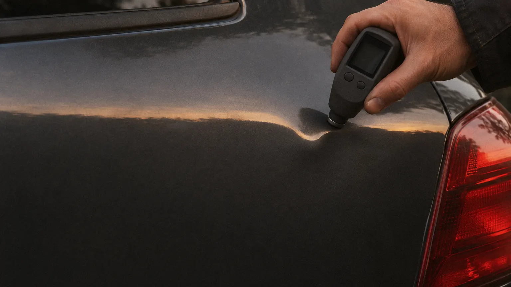

Cihan Es, Kfz-Sachverständiger für Unfallschäden
Kfz-Gutachter in Mönchengladbach Ums Gutachten kümmern wir uns.
Termin am Telefon, Besichtigung dort, wo Ihr Auto steht, Versand an die Versicherung.
Der andere war schuld? Dann zahlt das Gutachten in der Regel seine Versicherung. Bei kleinen Schäden oft nicht: Das klären wir vorab am Telefon.
Mo bis Fr 8 bis 18 Uhr, Sa 9 bis 14 Uhr. Sonst per WhatsApp oder Rückruf.
Termin am Telefon, Besichtigung dort, wo Ihr Auto steht, Versand an die Versicherung.
Ihr Sachverständiger: Cihan Es
- Besichtigung mit HebebühneKarstraße 25, 41068 Mönchengladbach
- Büro und Post, RheydtDahlener Straße 286, 41239 Mönchengladbach
Besichtigung in Mönchengladbach, Viersen, Willich, Korschenbroich, Neuss, Kaarst und Grevenbroich. Einsatzgebiet
Wer zahlt das Gutachten?
Die Versicherung des Unfallgegners will ihren Gutachter schicken?
Sie müssen nicht zustimmen und dürfen jeden qualifizierten Gutachter beauftragen.
- Der Gegner ist allein schuld
- In der Regel zahlt seine Versicherung das Gutachten.
- Teilschuld
- Die Versicherung zahlt anteilig, den Rest tragen Sie.
- Selbst verschuldet, Hagel, Wild
- Fall für Ihre Kasko. Fragen Sie dort vorher: Ein eigenes Gutachten zahlt sie nur mit Zustimmung.
- Kleiner Schaden
- Die Versicherung zahlt das Gutachten meist nicht. Oft reicht ein Kostenvoranschlag.
Ob sich ein Gutachten lohnt, klären Sie am Telefon, bevor Kosten entstehen.
Kosten und HonorarSo läuft es ab
Anruf
Sie schildern den Unfall und vereinbaren den Termin. Fotos per WhatsApp helfen.
Besichtigung
Dort, wo Ihr Auto steht, oder auf der Hebebühne an der Karstraße 25. Auf der Hebebühne sieht man auch den Unterboden. Sie steht in einer eigenständigen Werkstatt.
Gutachten
Schriftlich, mit Fotos: Reparaturkosten, Wertminderung (falls sie anfällt) und Ausfalldauer.
Versand
Auf Wunsch direkt an die gegnerische Versicherung.
Häufige Fragen
Wie schnell geht es?
Das hängt vom Schaden ab. Sie erfahren es im ersten Gespräch. Bei Totalschaden dauert es länger, weil Restwertangebote eingeholt werden.
Mein Auto fährt nicht mehr. Was nun?
Wir besichtigen dort, wo es steht: zu Hause, bei der Arbeit, in der Werkstatt. Beim Abschleppdienst kostet jeder Tag Standgeld: Rufen Sie schnell an. Angemessene Abschlepp- und Standkosten gehören bei unverschuldetem Unfall in der Regel zum Schaden.
Gerade nicht telefonieren?
Hinterlassen Sie Ihre Nummer. Der Rückruf kommt Mo bis Fr ab 8 Uhr, Sa ab 9 Uhr.